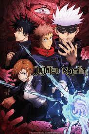

Jujutsu Kaisen é um anime sombrio que lida com elementos sobrenaturais como maldições, espíritos e feitiçaria. O anime começa com a morte do avô do protagonista, Yuji Itadori. Antes de morrer, ele pede que Itadori viva uma vida em que ele possa escolher como morrer sem ter arrependimentos.
